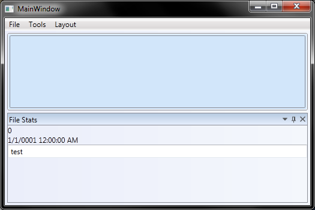
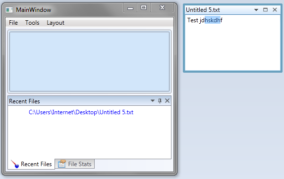

Introduction
"AvalonDock is a WPF controls library which can be used to create a docking layout system like that is present in Visual Studio. It supports fly-out panes, floating windows, multiple docking manager in same window, styles and themes and it can host WinForms controls." (citation from http://avalondock.codeplex.com/)
AvalonDock is a very complete and stable open source project for .NET/WPF that offers this functionality and has been in the making for half a decade now. The current solution is a step forward as it was build from scratch, supports MVVM, is themable, and can be localized.
AvalonDock was written by Adolfo Marinucci. I am in no way involved with the development of AvalonDock but felt that it was time to document some essential things. I am not sure whether I got everything completely right (since I am not the primary developer) but I am building on some experience and simply hope people will give me feedback here if I am making claims that are false.
The first two parts of the tutorial are covering initial preparation steps and adding a Most Recent Files (MRU) tool window and a Start Page. There may be more parts on other AvalonDock subjects (theming, localization, AvalonEdit in AvalonDock 2.0) later. Those who cannot wait for later articles shall look at Edi (http://edi.codeplex.com) to see some of the things before I document them here. This article was in fact written with Edi.
Solution Preparation
Let's get down to business
Open the solution and set the Edi project as Startup Project in Visual Studio. Hit the F5 key to check that the application runs OK. I have seen the following content in my case:

The initial test application framework consists (in my case) of an empty document panel and one tool window at the bottom. Play around with the menu and tool window to get familiar with the functionality that is already there. We are going to extend this functionality with a Start Page and a second Tool Window (both are mainly displaying a recent files list).
Add the Recent Files List Control
I have documented a way of developing (look-less) controls through composition and theming in an earlier article series (http://www.codeproject.com/Articles/332541/WPFControlCompositionPart2of2). An extended version of this library contains a listview which can hold hyperlinks which in turn are customized such that:
The parts that implement the above requirements are:
Now I am not going too much into details on these items because I really want to focus on AvalonDock [2.0]. Please read the referenced articles if you really want to know more about the MRU implementation. And if that does not help, feel free to ask a question below the article.
So back to our AvalonDock integration project. Download and extract the Version_02_Edi_RecentFilesTW.zip file. This should give you a working solution with a Recent Files tool window in it. Just execute File>Open a few times to generate some hyperlink entries in the tool window and take a note of the extra MRU entries in the file sub-menu.
How does this solution work and what is necessary to get it? That is discussed in the remainder of this article.
The Most Recent Files (MRU) Tool Window (ViewModel)
I like to use RoutedUICommands whenever I can so I added the AppCommand class with a static constructor and the following commands:
LoadFile
PinUnpin
AddMruEntry
RemoveMruEntry
The LoadFile command is executed when a user opens a file. It is necessary to open a file when a user clicks on an entry in the recent files list. The PinUnpin command reverses the state of a pin in the MRU. And the other two commands AddMruEntry and RemoveMruEntry are executed to add or remove an entry. You can determine their function by following their references from the AppCommand class into the Workspace class (The class is similar to what others often call an ApplicationViewModel or MainViewModel. It is the root of all ViewModels in this project):
public void InitCommandBinding(Window win)
{
win.CommandBindings.Add(new CommandBinding(AppCommand.LoadFile,
(s, e) =>
{
if (e == null)
return;
string filename = e.Parameter as string;
if (filename == null)
return;
this.Open(filename);
}));
win.CommandBindings.Add(new CommandBinding(AppCommand.PinUnpin,
(s, e) =>
{
this.PinCommand_Executed(e.Parameter, e);
}));
win.CommandBindings.Add(new CommandBinding(AppCommand.RemoveMruEntry,
(s, e) =>
{
this.RemoveMRUEntry_Executed(e.Parameter, e);
}));
win.CommandBindings.Add(new CommandBinding(AppCommand.AddMruEntry,
(s, e) =>
{
this.AddMRUEntry_Executed(e.Parameter, e);
}));
}
Each MRU command executes the corresponding Executed method and the LoadFile command executes the Open() method in the Workspace class. Furthermore, the MRU is realized in a Workspace property called RecentFiles. It is this property whos data is visible in the GUI. But how does it get there and what is necessary to extend AvalonDock [2.0] to show it? Thats what we discuss next.
The Most Recent Files Tool Window (View)
Merging the versions contained in V01_Edi.zip and V02_Edi_RecentFilesTW.zip shows that I added a RecentFilesView in the View namespace. This is the view that AvalonDock [2.0] will show inside its tool window docking controls. It is bound to the RecentFilesViewModel whos property is located in the Workspace class.
The View
AvalonDock uses a DataTemplateSelector (View.Pane.PanesTemplateSelector) to determine the appropriate view whenever it sees a data item that needs a display. I extended this class by the RecentFilesViewTemplate property:
public DataTemplate RecentFilesViewTemplate
{
get;
set;
}
...and the corresponding statement in the SelectTemplate method:
if (item is RecentFilesViewModel)
return RecentFilesViewTemplate;
This code works hand in hand with this view extension in the MainWindow.xaml file:
<pane:panestemplateselector.recentfilesviewtemplate>
<datatemplate>
<view:recentfilesview>
</view:recentfilesview>
</pane:panestemplateselector.recentfilesviewtemplate>
The Style
A style PanesStyleSelector controls how fields in the viewmodel are mapped into AvalonDock's primary functions (such as, display a name of an item, or the command to execute for closing etc). Again we can extend the View.Pane.PanesStyleSelector class with an additional property:
public Style RecentFilesStyle
{
get;
set;
}
...and the corresponding logic in the SelectStyle method:
if (item is RecentFilesViewModel)
return RecentFilesStyle;
...which works hand in hand with this XAML in MainWindow.xaml:
<pane:panesstyleselector.recentfilesstyle>
<style targettype="{x:Type avalonDock:LayoutItem}">
<Setter Property="Title" Value="{Binding Model.Title}"/>
<Setter Property="IconSource" Value="{Binding Model.IconSource}"/>
<Setter Property="Visibility" Value="{Binding Model.IsVisible, Mode=TwoWay, Converter={StaticResource BoolToVisibilityConverter}, ConverterParameter={x:Static Visibility.Hidden}}"/>
<Setter Property="ToolTip" Value="{Binding Model.FilePath}"/>
<Setter Property="CloseCommand" Value="{Binding Model.CloseCommand}"/>
<Setter Property="ContentId" Value="{Binding Model.ContentId}"/>
</style>
</pane:panesstyleselector.recentfilesstyle>
The very long line on the Visibility property (with the converter) is crucial to get the menu entry Tools>RecentFiles to work. The preferred method for this is a command binding but we just set a Boolean property here (for the sake of simplicity). The Boolean property IsVisible is located in the derived class of the RecentFilesViewModel. That is, it is present in RecentFilesViewModel because it inherits it from the Base.ToolViewModel class.
The BoolToVisibilityConverter does the conversion between the Boolean and the Visibility property. This conversion is required since Boolean has 2 states (true, false) while Visibility has 3 (Visible, Hidden, Collapsed) states in WPF. Read, for example, the article referenced in [3] if you want know more about converters and their application in WPF.
The Recent Files Menu Entry
The Recent Files menu entry at File>Recent Files is defined by this XAML code (taken from MainWindow.xaml):
<MenuItem ItemsSource="{Binding RecentFiles.MruList.ListOfMRUEntries}" Grid.Row="0" Header="Recent Files"
Visibility="{Binding Path=RecentFiles.MruList.ListOfMRUEntries, Mode=OneWay, Converter={conv:ZeroToVisibilityConverter}}">
<MenuItem.ItemContainerStyle>
<Style TargetType="MenuItem">
<Setter Property="Header" Value="{Binding DisplayPathFileName, Mode=OneWay}" />
<Setter Property="Command" Value="cmd:AppCommand.LoadFile" />
<Setter Property="CommandParameter" Value="{Binding PathFileName, Mode=OneWay}" />
</Style>
</MenuItem.ItemContainerStyle>
</MenuItem>
Here you can see at the ItemsSource binding that each entry is taken directly from RecentFiles.MruList.ListOfMRUEntries. Where RecentFiles is a property of the Workspace class and the MruList is a property of the RecentFilesViewModel viewmodel.
So, the source of the menu item collection is really managed the MRUListVM class.
The command that is executed when a user clicks a recent files menu item is the LoadFile command which is implemented as a RoutedUICommand in the AppCommand class. But the AppCommand class provides just the commanding facility, the actual logic is implemented in the InitCommandBinding method in the Workspace class (see code listing on LoadFile further up in this article).
Customizing AvalonDock 2.0
Here is one of the many things that make AvalonDock such a cool control. Users are actually able to drag items out of the main window (for example a document on to a second monitor) and keep working with that. I have often seen people asking how can I configure my application to decide whether someone can actually drag an item off or not.

Add the following setting
<Setter Property="CanFloat" Value="False" />
into the style of an AvalonDock LayoutItem to disable the fly out functionality. You could even bind this property in your viewmodel to make this setting configurable at run-time.
Summary
...and there you have it. That's mainly all that is necessary to get a new tool window in AvalonDock. Lets give Adolfo Marinucci a big applause because I doubt that anyone could do something so complex in such a simple way.
We finally have separation of concerns between view and viewmodel and there is a simple pattern to follow. Lets not forgot that docking and fly out functionality that AvalonDock offers out of the box. Now who thought that MVVM is too complex and too difficult to implement? Think again.
In the next article we'll be looking at creating a new document - do not forget to give me your feedback on this article and go on to the next stage [1] whenever you feel like learning to add a start page to your application.
References
History
- 24.20.2012 Initial creation.
- 01.03.2013 Updated AvalonDock version and simplified article and source code.